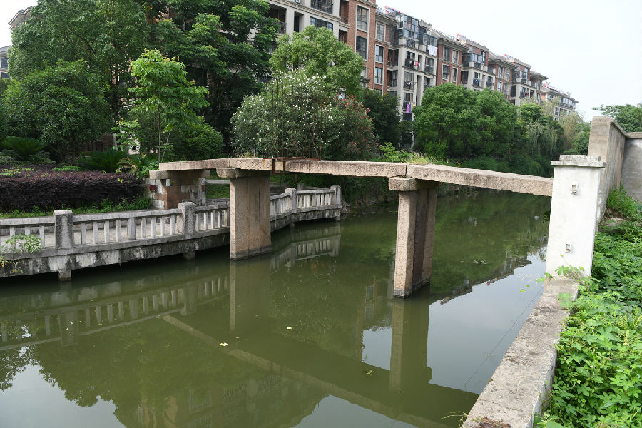

嘉兴市文物保护网 · 市级文物保护点 · 2022-05-16 · 原文

义圣王桥位于经济开发区城南街道恒力路286号义圣名苑小区内，南北横跨义圣王桥港。始建年代不详，现桥重建于清光绪十七年（1891）。三孔无栏梁式石板桥，全长13.4米，桥面宽1.67米，桥身由三块长条石并列分三节砌筑，南北两侧均已无台阶。东西桥额上刻有“重建义圣王桥”“光绪十七年三月吉旦立”字样，并装饰卷草纹样。桥身天磐石有铜钱、暗八卦等纹饰，桥柱中间条石上刻有荷叶、荷花纹饰边框，内有刻字。东西桥联分别为“茶禅夕照波心塔涌影长留，桃坞春深兴圆花寻津可问”“桑影春浓新筑虹腰临野水，秋歌晚唱好骑牛背度斜阳”。现作为小区景观之一，不可通行。该桥桥身保存较完整，历史悠久，形制优美大气，具有较高的历史、科学和艺术价值。2021年被公布为嘉兴市文物保护点。